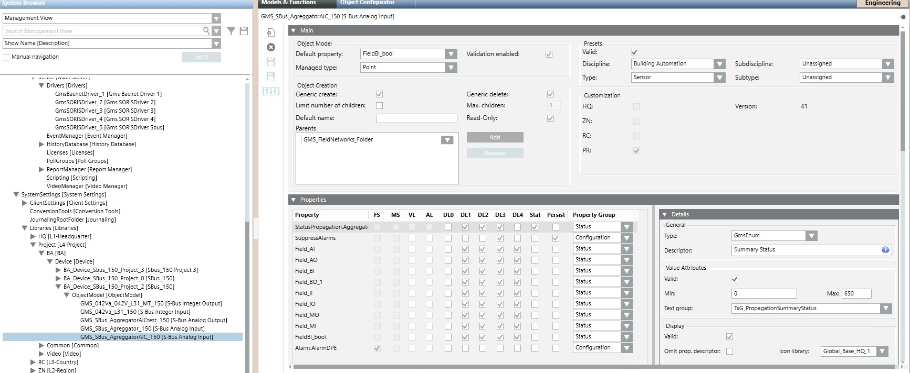
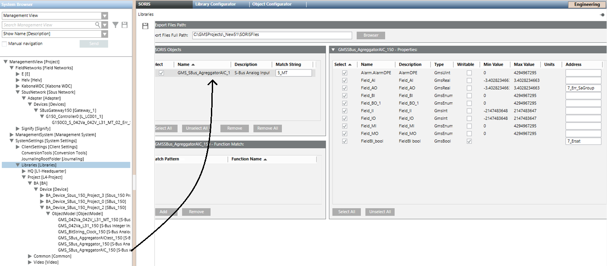
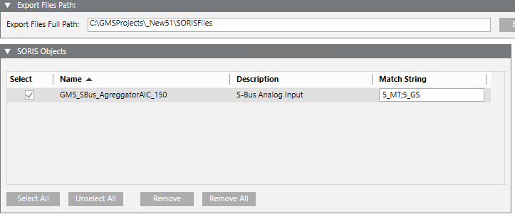
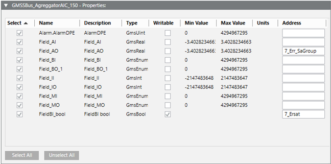
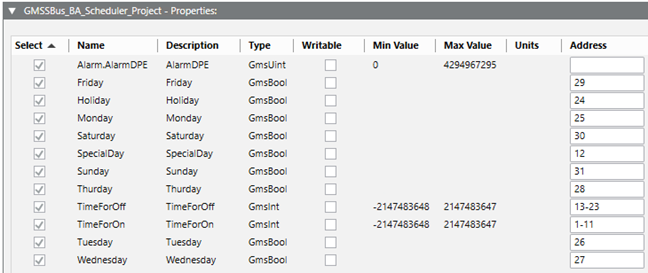
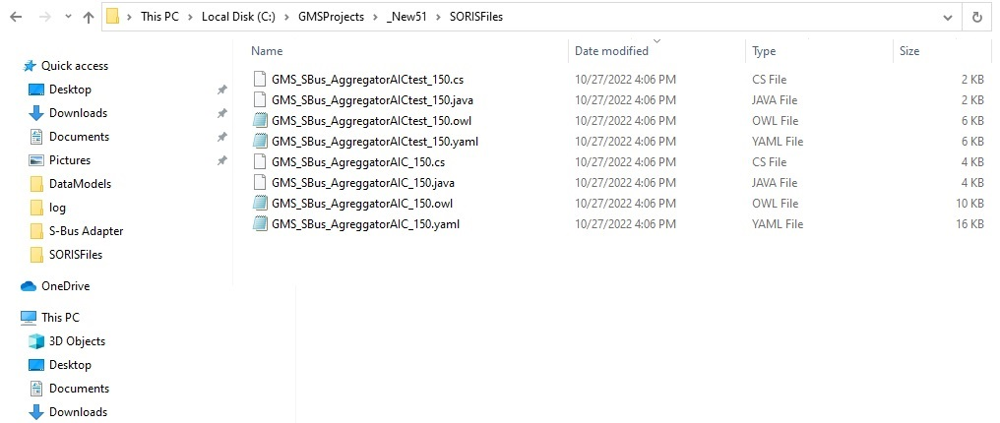

Configuring the Datapoint Aggregations and Bitstring Splits
To ensure flexibility in mapping the S-Bus datapoint information into the Desigo CC objects, you can aggregate multiple S-Bus datapoints, or split a datapoint into smaller data types (Bitstring Split).
This requires a special configuration with the purpose of creating an OWL model file for the adapter. Complete the following steps:
Create the Aggregation or Bitstring Split Object Model
In the S-Bus Library, create a Desigo CC Object Model that contains the Properties to represent the S-Bus datapoints you want to aggregate or split.
You can do this by customizing one of the default S-Bus Object Models.
Name the new Object Model based on the aggregation or split criteria. For example, if the model aggregates analog inputs, GMS_S-Bus_Aggregator_Analog_Inputs
For instructions about Desigo CC Libraries and Object Models, refer to the Libraries section.

Configure the Object Model Properties
- The new Object Model is ready in the S-Bus library.
- Select the main Libraries node and then the SORIS tab.
- Drag the Object Model you created in the SORIS Objects expander.
- A new entry appears in the SORIS Objects expander. A corresponding property expander appears on the right.

- For aggregations, based on the set of S-Bus register names (o symbol names) to match, enter the Match String in the format <position>_<substring>, with <position> being the field number, and <substring> being the substring to search for in the field. For example, 5_MT.
NOTE 1: The match string is required to aggregate, not for the bitstring split.
NOTE 2: You can enter multiple match strings separated by ";". For example, 5_MT;5_GS
NOTE 3: Check the register names in the S-Bus tool. In the names, fields are separated by "_". 
- In the property expander, enable the Select check boxes.
- In Address, enter one of the following:
- For the information to aggregate, the last field of the object registry name.
- For the biststring split, the bit range n-m in the datapoint 32-bit word (see S-Bus Bitstring Split Mapping).
NOTE: Make sure to Select all properties.


Export the Aggregation/Split File to the S-Bus Adapter
- All the required properties are set in the SORIS Object Model.
- In the Export Files Path expander, copy the Export Files Full Path field.
- From Windows, open the File Explorer and paste the path in the address bar.
- The File Explorer displays the list of exported aggregation files (.OWL extension).

- Copy the OWL file named after the Object Model and paste it into the Adapter data models folder, typically: C:\Siemens\S-BUS Adapter\DataModels\.
- From the Windows Services application, Stop and then Start again the S-Bus Adapter.
You can repeat the entire procedure for more Object Models as necessary.
IMPORTANT: You must complete the aggregation configuration in the CSV file you import to create the Desigo CC data structure (see Configuring the S-Bus Object Structure and Alarm Control):
the sets of aggregated datapoints must have the same object Name to get a unique and common aggregation object created in System Browser.